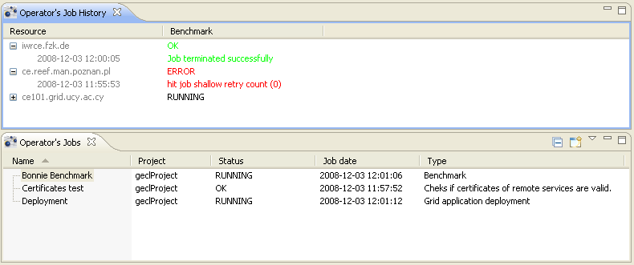
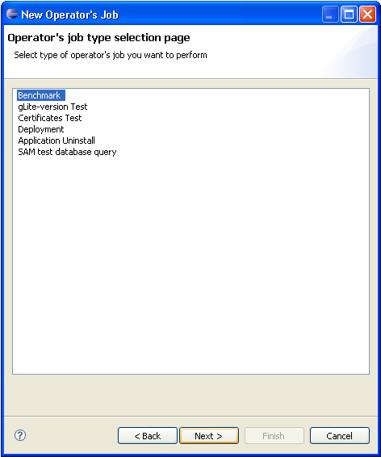

g-Eclipse service job framework introduces two new views: Operator's Job and Operator's Job History with actions similar to Job's View. User can create new Operator's Jobs, submit them, resubmit existing jobs and see detailed informations about them, such as all results of this service job executions on each of the target resources. To see how running service jobs and their results are presented, please consult the screenshot below.

We distinguish two types of service jobs based on how the job is executed.
If the service job is executed as a grid job, we will call it submittable
service job, while the rest of the service jobs will be called basic service
jobs. Framework provides two abstract classes for this two cases:
eu.geclipse.servicejob.model.AbstractServiceJob and
eu.geclipse.servicejob.model.submittable.job.AbstractSubmittableServiceJob.
When using mentioned abstraction developer is asked to implement only few
methods needed to perform the service job and get the results
We encourage all service job providers to use service job framework to introduce their grid tasks into g-Eclipse. As can be see in the examples provided by g-Eclipse, this integration was successful for application deployment/uninstall, grid resources benchmarking and few others.
The UI part of the Service Job Framework is hidden from the developer. For proper implementation you only need to implement model classes of the Service Job Framework - all views and informations about your job will be presented to the user using this model classes.
Only UI part you should consider to extend is wizard for your service job.
To add your service job to the service job wizard (see screenshot below) you need
to contribute to the eu.geclipse.servicejob.servicejobProvider
extension point by creating wizard extension. You will also need to provide
implementation of the
eu.geclipse.servicejob.ui.wizard.AbstractServiceJobWizardNode abstraction. See
section MISSING LINK

When writing new submittable service job developer is not required to create implementations of all of the above steps from the scratch. In fact, service job framework provides you with the job submission and monitoring, and it invokes appropriate methods from the underlying implementations when each grid job finishes. You are only asked to provide service-specific informations needed to perform your task on the grid.
For further detail, how can you implement new submittable service job, please proceed to How to implement submittable service job.